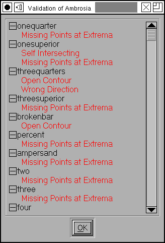

Font Validation window¶
Both PostScript and TrueType impose some restrictions on the data that define a font. Before you save a font you should do a quick check (well… it’s not always quick) to insure that you are not breaking any rules.
No open contours
No paths may intersect.
All paths must be drawn in a consistent direction. Clockwise for external paths, anti-clockwise for internal paths. (Actually PostScript requires the exact opposite, but FontForge reverses PostScript contours when it loads them so that everything is consistant internally – and reverses them again when it saves them, of course).
There may be no flipped references (this is a special case of the above, a flipped reference will have its contours drawn in the wrong direction).
There must be points everywhere a contour attains a local maximum or minimum, horizontally or vertically. (Actually there are exceptions to this rule, for small curved sections like serifs. The exception is not defined very well, and FontForge makes a guess and will not report errors if the spline is small – but the actual definition of “small” is somewhat arbetrary).
The coordinate offsets between adjacent points (or control points) must not be greater than 32767.
All opentype substitution commands must refer to real glyphs.
In PostScript fonts there is a limit of 1500 points in a glyph.
In PostScript fonts there is a limit of 96 hints in a glyph.
In PostScript, non-cid-keyed fonts, glyph names may not be longer than 31 characters and may contain only “A”-“Z”, “a”-“z”, “0”-“9”, “_” and “.”. (If you have the UnicodeGlyphNames preference item check, FontForge disables this check because it assumes you know what you are doing and you are planning to rename the glyphs before they get saved anyway).
In a TrueType font, point coordinates must be integral.
Missing anchor. According to the opentype spec, if a glyph contains an anchor point for one anchor class in a subtable, it must contain anchor points for all anchor classes in the subtable. Even it, logically, they do not apply and are unnecessary.
Duplicate glyph name. Two (or more) glyphs in this font have the same name. When outputting a PostScript font only one of them will ever be seen.
It’s a little hard to detect this in normal use, but if you change the encoding to “Glyph Order”, and then use and enter the glyph name, both of them should be selected.
Duplicate unicode code point. Two (or more) glyphs in this font have the code point. When outputting an sfnt (TrueType/OpenType) font only one of them will ever be seen.
It’s a little hard to detect this in normal use, but if you change the encoding to “Glyph Order”, and then use Edit->Select->Wildcard and enter the code point, both of them should be selected.
Check that the OS/2 version number is valid.
Validating a font can take a long time. So FontForge caches the validation state of each glyph (saving it to the sfd file so it is valid across invocations) and will only validate those glyphs which have changed since the last validation. This means that although the first validation may be slow, subsequent validations will probably be very fast – so don’t be discouraged by the time it takes to do this the first time.
(If, for some reason, you need to revalidate, then right clicking in the window will give you a menu where “Revalidate All” is an option).
The Validation window will recheck the state of the font as you edit it. So if you leave the window open you will see glyphs popping into the window and out of it as you create and fix problems.
If you double click on a line in the window then FontForge will open an outline glyph editing window for that glyph, and run a small version of Element->Find Problems to help you track down exactly where in the glyph the error(s) occurred.
If you right click, you will get a popup menu which has various options which may fix some of the problems in the glyph. There are also options to:
scroll the window to display the errors of a particular glyph
revalidate the glyph (usually this happens when needed… but just in case fontforge screws up this option is present)
revalidate all glyphs (again, I hope this won’t be needed – but just in case)
Select all glyphs with a particular error in the font view
Try to do a batch fix of all glyphs with a particular error.
I say that these options “may” fix problems. Let me give some examples where they can’t.
If a glyph contains a reference which is drawn in the wrong direction then you can’t fix it in the refering glyph.
If a glyph contains two references which intersect one another, then Remove Overlap can’t fix them. You must inline the references before you can correct them.
The normal Add Extrema command is cautious about adding extrema which would be very close to the end-points of a spline (because when you round those points to integers they may end up lying right on top of the end points, or because rounding the control points may cause significant distortion of the spline’s shape). Unfortunately these are exactly the cases which are most likely to occur. So FontForge has two variants of Add Extrema, which which adds what it thinks are “Good” extrema, and one which will add all extrema even if they are likely to cause problems later.
When the Add Good Extrema command does not fix your problem, you may be better off examining the glyph yourself and seeing if you can redesign it manually.
There is another pair of entries in the menu which sort of postpone dealing with the issue. Consider the glyphs Aring, Ccedilla and Oogonek. Frequently these glyphs are designed so that the accent will overlap the base letter. One would like to leave the glyph as being made up of references, but one would like to get rid of the overlap when the font is generated. There is a special flag in Element->Glyph Info->Unicode->Mark for Unlink, Remove Overlap before Save which will make fontforge unlink a glyph’s references, and then run Element->Remove Overlap on them just before saving them. Then after saving it will reverse the operation and leave you with the original references.
So there are a pair of menu items (one for the current glyph, one for all glyphs that meet certain criteria) which will set this flag for the relevant glyph(s). Once this flag is set FontForge will no longer report that the glyph self-intersects.